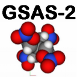

Help for GSAS-II
This is where to find help on various GSAS-II windows.
GSAS-II data tree
This is a hierarchical view of the data items in the current
project. Clicking on any item in the window opens a view where
information in that item can be viewed or edited. For example, the
"Sample Parameters"
item contains information about how data were
collected, such as the sample temperature
(see below).
Atoms Control Window
This window...
Constraints Control Window
This window...
Restraints Control Window
This window...
DiffractionData Control Window
This window...
Draw Atoms Control Window
This window...
Pawley Control Window
This window...
Index Peaks Control Window
This window...
Images Control Window
This window...
Background Control Window
This window...
Limits Control Window
This window...
Instrument Parameters Control Window
This window...
Image Masks Control Window
This window...
Sample Parameters Control Window
This window...
Powder Peaks Control Window
This window...
Cell Indexing/Refine Control Window
This window...
Reflection List Control Window
This window...
Texture Control Window
This window...
PDF Controls Control Window
This window...
Last modified: Tue Nov 22 13:19:47 CST 2011